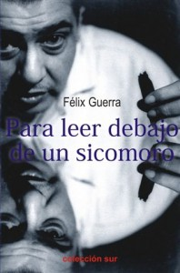

Por: Juan Nicolás Padrón.
Fuente: Cubarte.


El verbum criollo de Lezama se despliega apelando a lo que considero uno de sus más logrados recursos: la exageración. La hipérbole es manejada con imaginación y salto conceptual, haciendo guiños pícaros a los enterados y desconcertando a los poco entrenados, invitándonos a una interminable digresión que concluye elegantemente en el tema propuesto por el entrevistador bajo una impresionante coherencia, nunca apartado del ritmo jadeante y asmático de indagación lúdica, en la que sin darnos cuenta, todos llegamos a contaminarnos y hemos participado. Una palabra llama a la otra, no pocas veces siguiendo afinidades fonológicas —que bien pudieran ofrecer tema para una tesis—, revivida en su origen ancestral y enlazada en un fabuloso ejercicio de erudición. La maravilla de seguir aquella memoria que interroga y responde con más interrogaciones, de adentrarse junto a él en un universo de resonancias y dudas provocadas, en territorios fronterizos con otros donde la cultura se convierte en saberes y enigmas, resulta una fiesta de la fantasía en que nunca nadie está sustraído o acortado, porque todo lector, si quiere, se siente incluido, una invitación permanente para revisar los asuntos presentados: Martí, el árbol, la mar y el río, el ejercicio de la lectura, los descubrimientos y los descubridores, la llamada literatura dirigida a los niños, las relaciones cada vez más infrecuentes con la naturaleza, los ocultos vínculos de la cultura eurocentrista y las visiones acriolladas del mestizaje, la evocación de lecturas y su circunstancia, la zoología mitológica o mítica, una paisajística singular, los juegos con el espacio y el tiempo, los símbolos, los mitos, los sistemas, la historia de la Historia, el método, la estética y otras tantas especulaciones.
Una palabra basta para hacer tesis, una frase es suficiente para agotar, cual extenso y enjundioso tratado, cualquier tema. Los símbolos se amplifican, sobredimensionan y expanden hasta invadir el universo del discurso lezamiano, logran perderse en la lejanía y regresar retorcidos, coloreados y fantaseados; la imagen, en ese retorno, llega cargada de la cultura que Lezama repletó con un juego de espejos insólitos, presto a perderse en su laberinto. La sobrenaturaleza y los estados larvarios constituyen puntos de partida o arranque para sus disquisiciones; el receptor, para no extraviarse, debe estar atento a las claves que va dejando “el gordo de Trocadero”; el aprendizaje comienza desde el principio y cuenta con el azar, una categoría que el racionalismo de la modernidad quiso aniquilar y él, como defensor de su concurrencia, defendió contra viento y marea en un trópico azaroso donde algunos todavía se empeñan en implantar métodos germanos. Quien escucha debe estar preparado para participar bajo acompañamiento poético y atento para descifrar claves que pueden ser relativamente sencillas como alguno de los Versos Sencillos de José Martí, o casi crípticas, porque se remontan a las muy disímiles y poco frecuentadas lecturas; de lo contrario, el espectador se despista y se pierde la mitad del linaje de su elocuencia, no encuentra a su parador en el salto mortal del trapecio y queda suspendido en el aire: cuando se habla de Van Gogh, espere que se refiera a una oreja; cuando se menciona al cubismo, pronto aparecerá el bigote, presumiblemente el de Dalí. Y mientras más provocaciones, más estimulaciones para situar la varilla más alta; hay que mantenerse a la expectativa: el salto será descomunal. Pero por mucho que el Maestro especule y registre extrañas miradas sobre cualquier tema, siempre habrá un vínculo natural con la Natura que lo acredita de una autenticidad admirable.
Lezama era consciente de su fabulosa imaginación y sabía que dejaba un tintero lleno de esperma, “un regimiento de criaturas que resisten y resistirán el no nacer”. Sostenía la importancia del vínculo natural con la poesía y la pericia de los niños al escoger para sus lecturas solo a los clásicos. Pudiéramos decir con él que “de Martí creemos saber lo necesario, hasta que luego intuimos que apenas ignoramos lo suficiente”. Sus primigenios alimentos martianos y juanramonianos lo catapultaron hacia una infinitud de incitaciones que nunca desdijeron de maestros como Rubén Darío y Federico García Lorca. Esa honestidad lo distingue y le otorga una alcurnia que otros no tuvieron a pesar de sus méritos. Fiel a Cintio y a Fina, a Eliseo y a Bella; leal a Cortázar —todavía espero un texto que profundice orgánicamente en esa relación— y a Chinolope —una rareza que aguarda ser desentrañada—; y también a otros del paradigmático Grupo Orígenes —Piñera, Gaztelu, Rodríguez Feo, Baquero, Mariano, Portocarrero, Rodríguez Santos y Orbón—, así como a diversos allegados, cuyas pláticas con el autor de Paradiso construyeron una enorme catedral de la oralidad, una y otra vez se revisitaba en la escritura con libros como los de Carlos Espinosa, Reynaldo González, Ciro Bianchi Ross… y Félix Guerra. No resulta extraño que Lezamalogre un lenguaje en sus novelas semejante al poético, pero sobre todo, muy parecido a cómo habitualmente conversaba entre amigos. El misterio de la vida que se da mediante la estructura narrativa en un ambiente de realidad, no dista mucho de su orfebrería en el arte de la conversación, pues como dijera: “La vida es una especie de paseo de oruga por el desierto en un mosaico”.
El texto va acelerando su ritmo en la medida que avanza; parte de autorreconocerse como el árbol, “un viajero inmóvil”, “árbol de la vida” y “traficante de oxígenos”; o como mar y humedad, el cambiante río de Heráclito, “agua enamorada”. Cogido en una trampa que le tendió su entrevistador, declaró que su sistema poético es abierto y en movimiento, por lo que La cantidad hechizada son cantidades que pueden mutar a partir de las múltiples incitaciones o interacciones del coro polifónico de sus lecturas e inspiraciones. Al pedírsele una relación de títulos preferidos negó rotundamente la existencia de listas y consideraba que no estaba preparado para hacerlas. Comparaba la hoja verde vegetal con la hoja industrial de un libro y concluía que “la del árbol es razón primigenia, la del libro es otra arremetida del sol”; en ese sentido, el poeta vinculaba el misterio de los orígenes con los destinos y ponía en evidencia las relaciones de la luz. Lezama desmitificaba la manía europea de acreditarse los descubrimientos y los inventos, jugaba maliciosamente a desacreditar esas marcas y cuños. Se reía de una posible lectura de Poe en el trópico, en una noche calurosa y sin cuervos; disfrutaba la autoctonía cuando afirmaba: “Todo mi reino por una guanábana”. Sabía que la construcción del conocimiento mediante la filosofía, tal como había venido de Europa, hacía ganar celebridad por las afirmaciones menos comprobables, y más que creer, era importante crear. El poeta estaba convencido de que “con los asaltos a mano armada en los callejones de América, se costeó una buena parte del postín europeo y su reiterado protagonismo”.
Mas estas y otras declaraciones ha sido posible leerlas gracias al minucioso trabajo de Félix Guerra y a sus acuerdos establecidos con Lezama: el entrevistador no se inhibiría de preguntar y las respuestas no tenían por qué ceñirse estrictamente a las preguntas, pues se trataba de un diálogo abierto, e incluso, resbaladizo; podía existir posposición de temas o repetición de ellos, improvisaciones que posibilitaran mayor reflexión o diferentes miradas; las reiteraciones, como en música, son más bien variaciones en torno a un tema; la censura o los límites estarían marcados por la conciencia individual de los dialogantes. El método seguido por Félix, adentrado en preguntas de intimidad, inéditas y hasta “peligrosas” por la posibilidad de un desplante, se habían acomodado en la confianza de Lezama de tal manera que obtuvo declaraciones insólitas, a veces delirantes y otras escurridizas. El llamado “neobarroquismo” del poeta contribuía al enmascaramiento y sondeo para conocer mediante la retroalimentación cuánto gustaba o cuánto ruido hacían sus afirmaciones, pues se trataba de ideas masculladas en solitario y enriquecidas con el tránsito de la conversación. Este fluir anecdótico de analectas con suficiente libertad, pero sin anarquía, pudo ser controlado y organizado sin que se perdiera rebeldía o las necesarias rupturas para lograr una conversación coherente, elegante y trascendente; este logro se debe a Félix, quien con sus atinadas intervenciones o sus oportunos seguimientos al delirio, alcanza un rendimiento equilibrado y gozoso.
Sería bueno que se declarara de dónde fue tomado este texto.
http://www.cubarte.cult.cu/periodico/letra-con-filo/para-provocar-la-lectura-debajo-de-un-sicomoro/25301.html